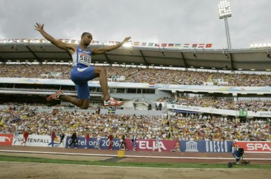
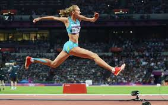
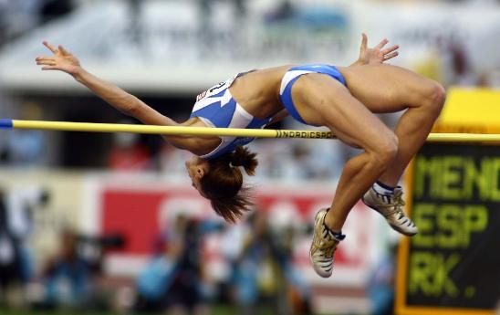
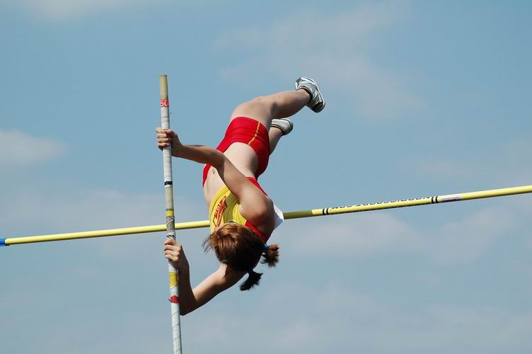

Salti in estensione
Salto in lungo
Il salto in lungo è una specialità sia maschile che femminile dell'atletica leggera, in cui gli atleti, dopo una rincorsa,
raggiungono la zona limite dove poter saltare, detta "asse di battuta", cercando di atterrare il più lontano possibile nella buca riempita di sabbia.
La lunghezza del salto viene misurata dal limite di battuta, indipendentemente dal punto esatto dove l'atleta ha staccato.

Salto triplo
Il salto triplo è una specialità sia maschile che femminile dell'atletica leggera, in cui gli atleti, dopo una rincorsa, raggiungono una zona di battuta da dove effettuano tre balzi consecutivi cercando di atterrare il più lontano possibile.
L'obiettivo è lo stesso del salto in lungo, arrivare il più lontano possibile, ma c'è una grande differenza nell'esecuzione tecnica dopo lo stacco dalla zona di battuta.

Salti in elevazione
Salto in alto
Il salto in alto è una specialità sia maschile che femminile dell'atletica leggera nella quale l'atleta deve oltrepassare con un salto un'asticella orizzontale posizionata ad una data altezza. Il salto può essere effettuato con qualsiasi tecnica, purché lo stacco da terra avvenga con un piede solo.

Salto con l'asta
Il salto con l'asta è una specialità sia maschile che femminile dell'atletica leggera nella quale l'atleta, dopo aver preso una breve rincorsa, utilizzando l'asta cerca di superare un'asticella, sorretta da due ritti, senza farla cadere.Il saltatore con l'asta deve coniugare la velocità propria di un velocista, forza nelle braccia e nel busto ed estrema agilità proprie di un ginnasta: solo con la presenza di tutte queste doti un atleta può ottenere buoni risultati in questa disciplina, una delle più spettacolari, se non addirittura la più spettacolare fra tutte quelle dell'atletica leggera.

Salti in elevazione
Salto in alto
Il salto in alto è una specialità sia maschile che femminile dell'atletica leggera nella quale l'atleta deve oltrepassare con un salto un'asticella orizzontale posizionata ad una data altezza. Il salto può essere effettuato con qualsiasi tecnica, purché lo stacco da terra avvenga con un piede solo.
Salto con l'asta
Il salto con l'asta è una specialità sia maschile che femminile dell'atletica leggera nella quale l'atleta, dopo aver preso una breve rincorsa, utilizzando l'asta cerca di superare un'asticella, sorretta da due ritti, senza farla cadere.Il saltatore con l'asta deve coniugare la velocità propria di un velocista, forza nelle braccia e nel busto ed estrema agilità proprie di un ginnasta: solo con la presenza di tutte queste doti un atleta può ottenere buoni risultati in questa disciplina, una delle più spettacolari, se non addirittura la più spettacolare fra tutte quelle dell'atletica leggera.
Salti in elevazione
Salto in alto
Il salto in alto è una specialità sia maschile che femminile dell'atletica leggera nella quale l'atleta deve oltrepassare con un salto un'asticella orizzontale posizionata ad una data altezza. Il salto può essere effettuato con qualsiasi tecnica, purché lo stacco da terra avvenga con un piede solo.
Salto con l'asta
Il salto con l'asta è una specialità sia maschile che femminile dell'atletica leggera nella quale l'atleta, dopo aver preso una breve rincorsa, utilizzando l'asta cerca di superare un'asticella, sorretta da due ritti, senza farla cadere.Il saltatore con l'asta deve coniugare la velocità propria di un velocista, forza nelle braccia e nel busto ed estrema agilità proprie di un ginnasta: solo con la presenza di tutte queste doti un atleta può ottenere buoni risultati in questa disciplina, una delle più spettacolari, se non addirittura la più spettacolare fra tutte quelle dell'atletica leggera.